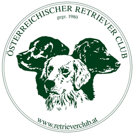
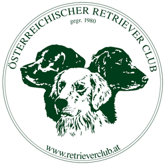

Unsere Zuchtstätte
Inmitten der malerischen Landschaft des Weinviertels, umgeben von weiten Wiesen und
Feldern, befindet sich unsere liebevoll geführte Golden Retriever Zuchtstätte. Hier, in einem
gemütlichen Einfamilienhaus mit großem Garten, wachsen unsere Welpen in enger
Verbundenheit mit unserer Familie auf.
Dadurch werden
sie von Beginn an in das tägliche Leben integriert und lernen bereits früh, mit Menschen jeden
Alters umzugehen. Die enge Bindung zu uns und die liebevolle
Betreuung sorgen dafür, dass sie zu ausgeglichenen und freundlichen Hunden
heranwachsen.
Unsere Hobbies
Die ländliche Idylle des Weinviertels bietet zudem zahlreiche Möglichkeiten für ausgedehnte Spaziergänge und Abenteuer in der Natur. Die Welpen erleben die unterschiedlichsten Eindrücke und Geräusche, was sie auf ihr zukünftiges Leben bestens vorbereitet.Gerne unternehmen wir mit unserem Wohnmobil ausgedehnte Reisen, gesellige Wanderungen, oder Städtetrips. Hier sind ganz klar unsere Hunde immer dabei. Ein wesentliches Merkmal unserer Zuchtziele ist es eben, eine Mensch-Hunde Beziehung ohne Einschränkungen zu bieten.


 
